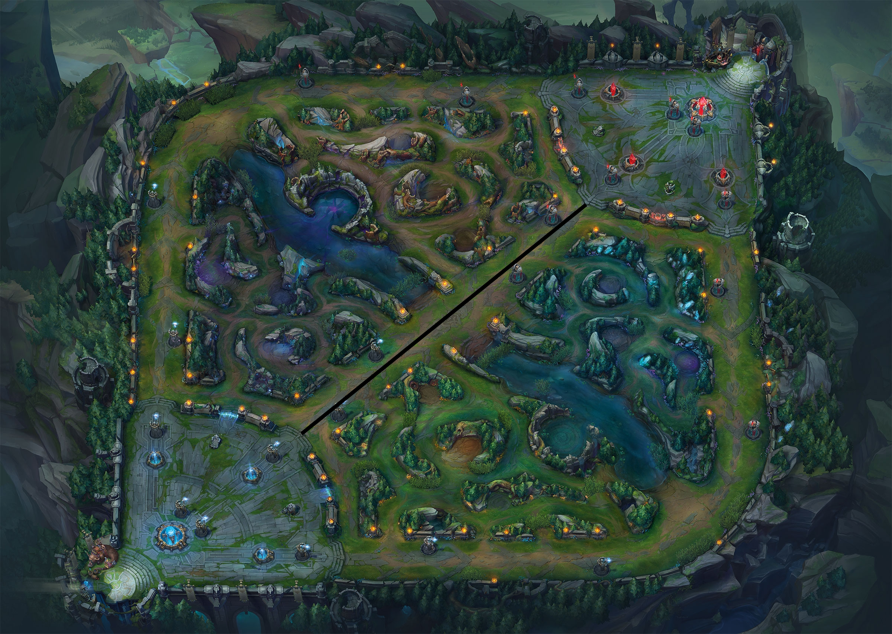

What is League of Legends?
League of Legends is a video game developed by Riot Games, which was released on October 13, 2009. With over 100 million monthly players in September of 2016 and no signs of slowing down, it's no wonder that this is the company's only game, deciding instead to pool its efforts into updating and improving their game. In terms of genre, League of Legends would be a multiplayer online battle arena, or a MOBA. In a MOBA, players control an in-game unit generally known as a “champion” and work together to destroy enemy turrets and eventually the enemy team's base. This is achieved through champions going to an assigned lane (more on that later), gaining gold and experience through the enemy minions, and using those resources to gain power. While most multiplayer games consist of a series of quick rounds, one game in a MOBA takes much longer, requiring more dedication to the game in order to progress.
How do you play League of Legends?
League of Legends is a deceptively complex game, and can deter some beginners. The following information below will break down a typical game from start to finish.
Pre-game
Champions
Champions are a powerful in-game unit controlled by a player. There are 5 champions on each team. All champions have 4 spells they can use, with one usually being an ultimate ability. These abilities have much more powerful effects than other spells, but have a longer cooldown as a result. Most champions also have some kind of cost to using these abilities (such as mana and energy), which encourages players to use their spells wisely. The four spells given to a champion largely define their role in-game (more on champion roles further down). With almost 150 champions in League of Legends as of March 2018, it's almost guaranteed that you will find at least one champion that you enjoy playing.
Runes
Runes are a set of special enhancements determined by the player in order to aid their champion in-game. There are five different categories of runes. The runes follow a four tier hierarchical structure, with the top rune or the “keystone” rune being the strongest, and there are 3 keystones per category. Players select a primary category and pick one rune in each tier. They also pick a secondary category, and can select any two runes from the bottom three tiers, as long as both runes don't belong in the same tier. These cannot be changed once the game has started. Runes can do anything from bursting an enemy champion to keeping yourself alive in fights. One keystone even lets you change your summoner spells in the middle of a game!

Summoner Spells
Summoner spells are a set of spells that can be used at any time. All summoners are actives, and as a result have much longer cooldowns than a traditional spell. These spells also come with no cost, and a champion must have 2 summoner spells each game. Summoner spells can offer a dash to a champion that lacks a traditional movement spell, a heal to you and an ally in a crucial fight, or an extra bit of damage to finish off an enemy champion.

Map
There are three different maps that you can play on. Summoner's Rift is the map that you will likely be spending all of your time on, as it is by far the most popular map, and incorporates all aspects of a traditional MOBA. Howling Abyss is a map with only a mid lane, and the game mode ARAM (or All Random All Mid) is played on this map. In this game mode, all champions are random. The last map is Twisted Treeline, and is a variation of Summoner's Rift, with only two lanes as supposed to three. Although most of the runes, champions, and summoner spells can be used on all three maps, the strategy is different. As a result, all in-game explanations will refer to the Summoner's Rift map.
In-game
Champion roles
Champions have a specified role on the team which corresponds to a certain area of the map that they play in during the earlier stages of the game. As the game draws on, players tend to group together, and no player is assigned one specific part of the map to be in. Below is a table of the different areas of the map, the overall impact it has on the game, and the kinds of champions you can expect to see in them.
| Role name | Place on map | Role in-game |
|---|---|---|
| Top | Top lane refers to the lane hugging against the top and left side of the map. The bottom lane tends to draw much more pressure and attention, leaving the top lane out to dry. As a result, top lane is much more focused on the control of the enemy and allied minions, as the top laner with minion control can roam around more freely without having to worry about losing out on experience and gold. Top laners are either tanks with excellent crowd control but weaker early games, champions that excel late game but have extremely weak early games, or champions with a strong early game that hope to gain a lead and snowball. | |
| Jungle |
Jungle refers to the area in between the three lanes. The role is widely regarded as one of the most difficult roles to learn and master, due to the plethora of options available to
them at all times and the constant map awareness needed to jungle effectively. While laners gain gold and experience through the enemy minions,
junglers must rely on neutral camps placed in between the lanes to earn experience and gold. In addition to this, the role also requires them to “gank” lanes,
which allows the team to get ahead and snowball.
Junglers need to have enough power early game to clear camps (as the neutral camps will do much more damage and take longer to kill than minions) and gank, while offering enough to stay relevant late game. You can expect to see all sorts of junglers, from assassins that rely on pure damage, to tanks that use crowd control and their innate durability, to a mix of both that are excellent at dueling and skirmishes. |
|
| Middle |  | Mid lane refers to the lane that goes from the bottom left corner to the top right corner of the map. Mid lane is at the center of the map, so they ultimately control the tempo of the game (excluding junglers). Mid laners are expected to show up at almost every early to mid game fight, gain information about the enemy jungler using wards, and become a carry when late game comes around. Mid laners either excel in the laning phase with the intention of gaining a lead, have abilites that allow them to roam to other lanes to gain a lead, or can scale and deal large amounts of game come late game. |
| ADC (Attack Damage Carry) | Bot lane refers to the lane hugging against the bottom and right side of the map. This role supplies the majority of the attack damage for the team, and is generally speaking the most fragile member of the team. Combine this with the potential for ganks and roams, and either team can gain a massive advantage quickly through this lane. Most ADCs want to scale into late game and output high amounts of consistent damage, although some still have much more dominant laning phases than others. | |
| Support | Supports are tasked with peeling for the team. In addition to this, supports also use a large amount of wards to make sure their ADC stays safe. Although the traditional support has a large amount of shields, heals, and crowd control, some players like to pick champions with powerful early games, as a bot lane with a lead can get out of hand quickly. |
Items
Items are purchased using gold gained passively and from enemy minions. You can only buy items in base, and their build out of components which you can buy to gain a small power spike. Items offer stat boosts to champions, and some have unique properties which allow them to adapt to the game accordingly. For example, an ADC can get an item which reduces healing to enemies that are damaged by them if the enemy support is becoming a problem for your team. Proper itemization is crucial to winning games.
Neutral objectives
Neutral objectives are large neutral camps that provide buffs to the team that kills it. The three main objectives are rift herald, dragon, and baron.
The rift herald spawns in the pit on the top side 9:50 into the game, and despawns at 19:45. If in combat, it will stay until 19:55. Killing the buff grants the “Eye of the Herald”
to the champion who picks it up (as long as they are on the same team that destroyed the buff). The Eye occupies your trinket slot, and channeling it will summon the Eye of the Herald.
When summoned, it will approach the nearest enemy turret and charge into it after a brief delay. Afterwards, it will attack the turret. If the turret falls, it continues destroying turrets until it dies.
The buff is excellent for forcing an enemy turret and gaining map control.
The baron buff spawns in the same pit as the Rift Herald at 20:00, and stays until killed. It respawns 7 minutes after it is killed. Kiling the baron grants a buff which halves your recall time, increase your ability and
attack power, and grants a powerful buff to nearby allied minions.
Dragons spawn in the pit on the bottom side. The first dragon spawns at 2:30, and will spawn at random intervals afterwards. There are five different types of dragons, each
offering unique buffs. The infernal dragon grants bonus ability and attack power, the mountain drake grants bonus damage to enemy structures and neutral objectives, the cloud
drake grants an out of combat movement speed buff, and the ocean drake grants bonus out of combat health and mana regeneration. The elder dragon spawns at 35:00, and doubles any
existing dragon buffs on the team when killed. It also grants a true damage burn on damage.
For extra information, consult the official website and the wiki.